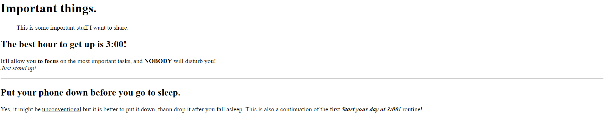

Zadání

Importatnt things
This is some important stuff I want to share.
The best hour to get up is 3:00!
It'll allow you to focus on hte most importatnt tasks,
and NOBODY will disturb you!
Just stand up!
Put your phone down before you go to sleep.
Yes, it might be unconventional but it is better to put it down,
than drop it after you fall asleep. This is also a continuation
of the first Start your day at 3:00! routine!